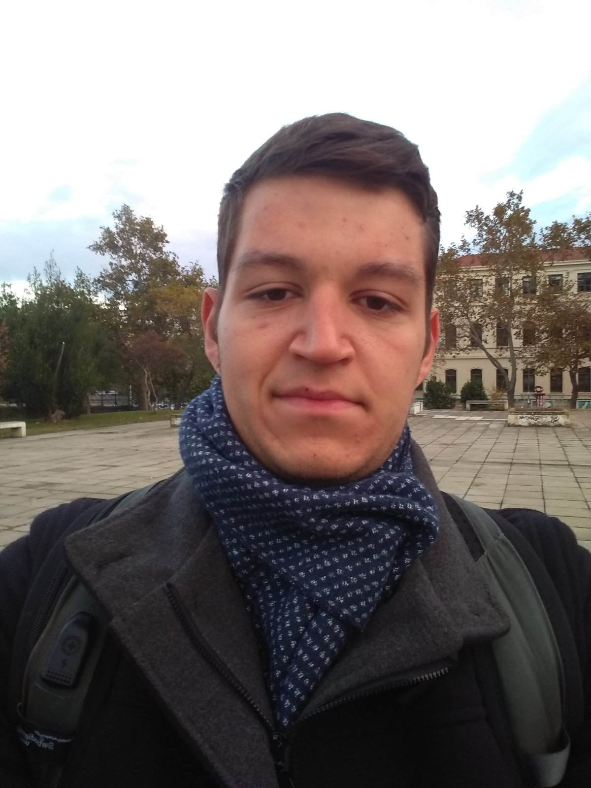

Ονομάζομαι Μπαρμπαγιάννος Βασίλειος και είμαι τελειόφοιτος φοιτητής του τμήματος Ηλεκτρολόγων Μηχανικών και Μηχανικών Υπολογιστών του ΑΠΘ. Επέλεξα τον τομέα ηλεκτρονικής και υπολογιστών, καθώς ασχολούμαι και μου αρέσει ο προγραμματισμός και η ρομποτική. Στα ενδιαφέροντά μου συγκαταλέγεται επίσης η ανάλυση δεδομένων και η μηχανική μάθηση.
Τρίμηνη πρακτική άσκηση στο Ινστιτούτο Βιώσιμης Κινητικότητας και Δικτύων Μεταφορών (ΙΜΕΤ) του Εθνικού Κέντρου Έρευνας και Τεχνολογικής Ανάπτυξης (ΕΚΕΤΑ). Ενασχόληση με το ρομπότ Spot της Boston Dynamics. Προγραμματισμός αυτόνομης πλοήγησης και λειτουργίας. Εργασία με αισθητήρες, κάμερες και κινητήρες. Χαρτογράφηση περιβάλλοντος και 3D οπτικοποίηση.
Τρίμηνη φοιτητική πρακτική άσκηση στο τμήμα Διαχείρισης Δικτύων του ΚΗΔ του Αριστοτελείου Πανεπιστημίου Θεσσαλονίκης.
Αριστοτέλειο Πανεπιστήμιο Θεσσαλονίκης (ΑΠΘ)
Οκτώβριος 2021 - Σήμερα
Κατεύθυνση: Ηλεκτρονικής και Υπολογιστών.
Μελίκη, Ημαθία
Σεπτέμβριος 2018 - Ιούνιος 2021
Βαθμός Απολυτηρίου: 20
Γλώσσες
Soft Skills
Πλήθος έργων τα οποία υλοποιήθηκαν στο πλαίσιο του προγράμματος σπουδών του τμήματός μου ή για τα προσωπικά μου ενδιαφέροντα.
Περισσότερα στη σελίδα μου στο Github.
Πιστοποίηση στη βασική υποστήριξη ζωής από το European Resuscitation Council: Καρδιοαναπνευστική αναζωογόνηση ενηλίκου, αποβολή ξένου σώματος, χρήση αυτόματου εξωτερικού απινιδωτή.
Εφαρμογές του Arduino στην βιοϊατρική από τις φοιτητικές ομάδες EMB και IEEE.
Σεμινάριο για την διαχείριση άγχους/παραγωγικότητα-motivation από την Eestech LC Thessaloniki.